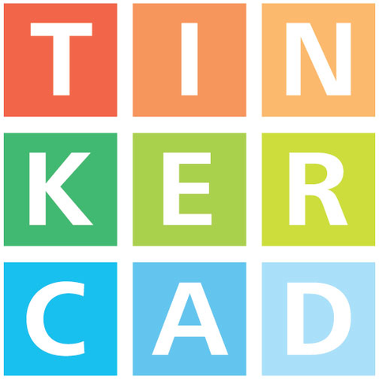

O que é o Tinkercad?
O Tinkercad é um programa online e gratuito de modelagem em 3D e de circuitos elétricos analógicos e digitais
desenvolvido pela Autodesk. É uma boa oportunidade para Programação Embarcada, já que,
normalmente, as pessoas não possuem microcontroladores.
O program é gratuito e pode ser acessado clicando aqui.
Aprendendo Tinkercad
O site do Tinkercad
apresenta diversos materiais e tutorias para aprender a utilizá-lo. Uma ferramenta que pode ser utilizada para fins pessoais
e para fins educativos.
Projetos Tinkercad
Esses foram os projetos Tinkercad implementados na matéria de Laboratório de Introdução à Programação (LIP).
X
a